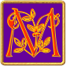

If you can see this box, your browser or internet device may not fully comply with current Web Standards
This site has been designed with Web Standards compliance in mind. It conforms to XHTML 1.0 Transitional and CSS 2.0 and will look its best when viewed in a browser that also complies with these standards. However, care has also been taken to ensure that the content of this site will remain accessible to anyone, regardless of which browser or internet device they may be using to view it.
Quick Links into this file
Back To Races of Mystara
PRODUCT IDENTITY NOTICE
The Mystaran Wood Elf Racial Details included herein are Product Identity belonging to Wizards of the Coast.
The details were generated by merging appropriate details about the elven race from the following 3E and 0E resources:
Primary Source Material:
Sources of Lore:
(major) PHB, PC2
(minor) DMG, GAZ1,
GAZ6, WotI,
AC1010
 ystaran Earth Gnomes are welcome everywhere as technicians, alchemists, and inventors. Despite the demand for their skills, most gnomes prefer to remain among their own kind, living in comfortable burrows beneath rolling, wooded hills where animals abound but hunting is a very bad idea.
Personality: Gnomes adore animals, beautiful gems, and jokes of all kinds. Gnomes have a great sense of humor, and while they love puns, jokes, and games, they relish tricks - the more intricate the better. Fortunately, they apply the same dedication to more practical arts, such as engineering, as they do to their pranks.
Gnomes are inquisitive. They love to find things out by personal experience. At times they are even reckless. Their curiosity makes them skilled engineers, since they are always trying new ways to build things. Sometimes a gnome pulls a prank just to see how the people involved will react.
Physical Description: Gnomes stand about 3 1/2 feet tall and weigh about 45 pounds. Their skin ranges from dark tan to woody brown, their hair is fair, and their eyes can be any shade of blue. Gnome males prefer short, carefully trimmed beards. Gnomes generally wear leather or earth tones, and they decorate their clothes with intricate stitching or fine jewelry. Gnomes reach adulthood at about age 20, and they live about 100 years, though some can live almost 200 years.
Relations: Gnomes have a particular affinity with Dwarves, believing themselves to be related, and often living and working together with them. They share the Dwarves' love of precious objects, their curiosity about mechanical devices, and their hatred of goblins and giants. As a curious and jolly folk, Gnomes enjoy visiting strange and exotic places and people and playing exotic practical jokes on them. This means that, while Gnomes, are friendly with most races, most races may find them a little irritating!
Alignment: Gnomes are most often good. Those who tend toward law are sages, engineers, researchers, scholars, investigators, or consultants. Those who tend toward chaos are tricksters, wanderers, or fanciful jewelers. Gnomes are goodhearted, and even the tricksters among them are more playful than vicious. Luckily, evil gnomes are as rare as they are frightening.
Gnome Lands: Gnomes make their homes in hilly, wooded lands. They live underground but get more fresh air than dwarves do, enjoying the natural, living world on the surface whenever they can. Gnomes are a clannish folk, living and working in complex burrows chock full of densely packed chambers connected by twisting passageways. Not much given to shouting, they often use an extensive system of ceiling-wires and message-holding cups to send communications. Their burrows are well hidden by clever construction and expertly defended by ingenious mechanical devices. Those who come to visit and are welcome are ushered into the bright, warm burrows. Those who are not welcome never find the burrows in the first place.
Gnomes who settle in human lands are commonly gemcutters, mechanics or sages.
Major concentrations of Gnomes in Mystara can be found living amongst the dwarves of Rockhome, while Karameikos also has several communities of gnomes living in its more distant, hillier regions (mostly in the Gnome stronghold of Highforge).
Religion: The chief Mystaran immortal of the gnomes is Garal Glitterlode (also known as Garl Glittergold). It is common belief that Garal created the Mystaran gnome race based on suggestions from Kagyar, the creator of the dwarves. Garal's clerics teach that gnomes are to cherish and support their communities. Pranks, for example, are seen as ways to lighten the spirits and to keep gnomes humble, not ways for pranksters to triumph over those they trick.
Language: All Mystaran gnomes and gnome subraces speak a single common gnome language. Slight differences in dialect reveal the origin of the speaker but do not interfere with mutual understanding.
The gnomish language, which uses the dwarven script, is renowned for its technical treatises and its catalogs of knowledge of the natural world. Human herbalists, naturalists, and engineers commonly learn gnome in order to read the best books on their topics of study.
Names: Most Mystaran gnomes have a given name and a clan name. In general, gnome names are two-syllables, similar to the Celtic and Norse naming traditions of our own world.
Gnome clan names are combinations of common Gnome words, and gnomes always translate them into Common when in human lands (or into Elven when in elven lands, and so on).
Common Given Names: Branwys, Dorfus, Erwys, Glimreen, Gundal, Marrak.
Major Clan Names: Karameikos: Hilltopper; Serraine: Firehand, Goldhand, Lodestar, Skyratchet, Stormkinder.
Adventurers: Gnomes are curious and impulsive. They may take up adventuring as a way to see the world or for the love of exploring. Lawful Gnomes may adventure to set things right and to protect the innocent, demonstrating the same sense of duty toward society as a whole that gnomes generally exhibit toward their own enclaves. As lovers of gems and other fine items, some gnomes take to adventuring as a quick, if dangerous, path to wealth. Depending on his relations to his home clan, an adventuring gnome may be seen as a vagabond or even something of a traitor (for abandoning clan responsibilities).
Earth Gnome Racial Details last updated: March 20, 2002 (version 1.1)
Back To TOP
Earth gnome characters have the following racial traits:
Earth Gnome Racial Traits updated: July 04, 2003 (version 2.0)
Back To TOP
Mystaran earth gnomes mature at a faster rate than the standard gnome race as defined in Chapter 2: Races of the Player's Handbook [PHB], and their average height is also several inches taller.
Add the information for standard gnomes to Tables 6-4, 6-5 and 6-6 of the Player's Handbook [PHB]:
Table 6-4: (modifications) Random Starting Ages
Brd Clr
Brb Ftr Drd
Rog Pal Mnk
Race Adulthood Sor Rgr Wiz
Gnome, earth 20 years +2d4 +3d6 +4d6
Table 6-5: (modifications) Aging Effects
Middle Maximum
Race Age Old Venerable Age
Gnome, earth 50 years 75 years 100 years +5d20 years
Table 6-6: (modifications) Random Height and Weight
Base Height Base Weight
Race Height Modifier Weight Modifier
Gnome, earth, man 3'0" +2d6 40 lb. x 1 lb.
Gnome, earth, woman 2'10" +2d6 35 lb. x 1 lb.
Earth Gnome Vital Statistics updated: July 11, 2003 (version 1.1)
Back To TOP
Home | About Mystara | Regions of Mystara | Races of Mystara | Classes of Mystara | Skills and Feats | Equipment | The Immortals Above | Magic in Mystara | Monstrous Manual | Mystaran Multiverse | 3E Conversions | Mystaran Lore | Acknowledgements | Legal Mumbo-Jumbo
Have comments or concerns about this web site?
Send email to
the strawberryJAMM Designs webmaster: webmaster [at] jamm [dot] com
Have comments or concerns you'd like to share about the Mystara
d20 conversion?
Join the
Mystara d20 Google Group